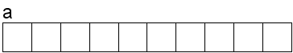
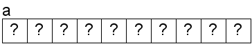
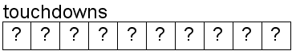
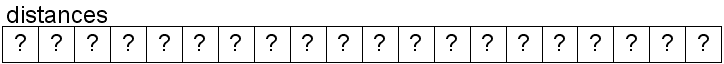
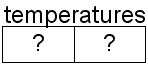

"... the results are undefined, and we all know what 'undefined' means: it means it works during development, it works during testing, and it blows up in your most important customers' faces." -- Scott Meyers
The sizeof Operator
C has an operator that returns the size (in bytes) of a value or type. It's a unary operator and it is listed in the precedence chart.General form is:
sizeof(expression or type)
Examples:
The sizeof operator is also unique in that it can determine the value at compile time. The program does not need to be executed to obtain the results. Also, the operand to the sizeof operator can be an expression. For example, given these declarations:
Code Output int i; /* uninitialized */ float f; /* uninitialized */ double d; /* uninitialized */ printf("sizeof(i) is %u\n", sizeof(i)); printf("sizeof(int) is %u\n", sizeof(int)); printf("sizeof(42) is %u\n", sizeof(42)); printf("\n"); printf("sizeof(f) is %u\n", sizeof(f)); printf("sizeof(float) is %u\n", sizeof(float)); printf("sizeof(42.0F) is %u\n", sizeof(42.0F)); printf("\n"); printf("sizeof(d) is %u\n", sizeof(d)); printf("sizeof(double) is %u\n", sizeof(double)); printf("sizeof(42.0) is %u\n", sizeof(42.0)); printf("\n");
This is the result of applying the sizeof operator to these expressions:int i; /* uninitialized */ int j; /* uninitialized */ double d; /* uninitialized */
Note that the sizeof operator doesn't use the values of the variables. It's just looking at the types. (Which is why using uninitialized variables is not a problem.)sizeof(i + j) is 4 (int) sizeof(i * j - 20) is 4 (int) sizeof(i * j * d) is 8 (double) sizeof(i + 2.0) is 8 (double) sizeof(10 + 3.2F - 5.4) is 8 (double)
One-Dimensional Arrays
An array is an aggregate data structure. This means that it consists of multiple values, all of which are the same type. Contrast this to scalar data types like float and int, which are single values. Each value in an array is called an element.Because all of the values in an array have the same type, an array is called a homogeneous data structure. To declare an array, you must specify an additional piece of information: the size.
The general form is:
This declares an array of 10 integers. The array is called a and has room for 10 elements:type identifier[non-negative_compile-time-integer_constant];
Visually, we can think of the array in memory like this:int a[10]; /* a is an array of 10 integers */
Also, like local scalar variables, the values of the array are undefined:
Examples:
Visually:int touchdowns[10]; /* array of 10 integers, 40 bytes */ float distances[20]; /* array of 20 floats, 80 bytes */ double temperatures[2]; /* array of 2 doubles, 16 bytes */
The sizeof operator will also determine number of bytes required for an array. Examples:


Technically speaking, these are called static arrays because the size is determined at compile-time and their size cannot change. Later, we will learn about dynamic arrays. Dynamic arrays can change their sizes (grow and shrink) at runtime.
Code Output int touchdowns[10]; float distances[20]; double temperatures[2]; printf("sizeof(touchdowns) is %u\n", sizeof(touchdowns)); printf("sizeof(distances) is %u\n", sizeof(distances)); printf("sizeof(temperatures) is %u\n", sizeof(temperatures));
Accessing Array Elements
Note that the addresses shown below are completely arbitrary and for discussion purposes only.
Most work with arrays is done with some kind of looping construct:
Assigning values to each element Printing out the values for (i = 0; i < 10; i++) printf("%i ", a[i]); Output: 0 2 4 6 8 10 12 14 16 18
Writing past the end of the array:It is crucial that you understand that there is absolutely, positively no boundary checking when reading/writing an array. Your program is completely undefined in the event you read/write out of bounds (even if it appears to work correctly).
The output at runtime:int a[10]; int i; for (i = 0; i < 15; i++) a[i] = i * 2;
21 [main] a 3672 _cygtls::handle_exceptions: Exception: STATUS_ACCESS_VIOLATION
546 [main] a 3672 open_stackdumpfile: Dumping stack trace to a.exe.stackdump
21 [main] a 3672 _cygtls::handle_exceptions: Exception: STATUS_ACCESS_VIOLATION
546 [main] a 3672 open_stackdumpfile: Dumping stack trace to a.exe.stackdump
63187 [main] a 3672 _cygtls::handle_exceptions: Exception: STATUS_ACCESS_VIOLATION
68303 [main] a 3672 _cygtls::handle_exceptions: Error while dumping state (probably corrupted stack)
Arrays and looping go hand-in-hand.
Code Possible memory layout
Unlike scalar types, you can't assign one array to another. This confuses many new C programmers. Instead, you must "manually" copy each element from one array to the other:
for while while (compact) int i = 0; int a[10]; while (i < 10) { a[i] = 0; i++; }
void assign1(void)
{
#define SIZE 10
int a[SIZE]; /* 10 integers */
int b[SIZE]; /* 10 integers */
int i;
/* set elements to i squared */
/* 0, 1, 4, 9, 16, etc... */
for (i = 0; i < SIZE; i++)
b[i] = i * i;
/* Assign elements of b to a */
/* This is not legal */
a = b;
/* Assign elements of b to a */
/* This is how to assign arrays */
for (i = 0; i < SIZE; i++)
a[i] = b[i];
}
Initializing Arrays
When we declare an array and provide its size, the array is called a static array. The size of the array is set in stone and will never change. Ever.We can perform static initialization of an array:
void some_function(void)
{
int array1[5] = {1, 2, 3, 4, 5}; /* All elements are initialized */
...
}
int array3[5] = {1, 2, 3}; /* 1, 2, 3, 0, 0 */
int array4[5] = {1, 2, 3, 4, 5, 6}; /* error: too many initializers */
int array5[] = {1, 2, 3}; /* array5 has 3 elements */
int array6[] = {1, 2, 3, 4, 5, 6}; /* array6 has 6 elements */
int array3[50] = {0}; /* All 50 elements are set to 0 */
Example: Given a date in the form of month/day, print out the day of the year. For example:
Day of Year for 1/1 is 1 Day of Year for 2/1 is 32 Day of Year for 5/13 is 133 Day of Year for 12/31 is 365
void DayOfYear(void)
{
/* The number of days in each month, assume non-leap year */
int jan = 31; int feb = 28; int mar = 31;
int apr = 30; int may = 31; int jun = 30;
int jul = 31; int aug = 31; int sep = 30;
int oct = 31; int nov = 30; int dec = 31;
int month, day; /* Current month and day */
int count = 0; /* Total count of days */
/* Prompt the user for month/day */
printf("Enter a date (m/d): ");
scanf("%d/%d", &month, &day);
/* Add up the days in previous months */
/* break statements intentionally missing */
switch (month)
{
case 12:
count += nov;
case 11:
count += oct;
case 10:
count += sep;
case 9:
count += aug;
case 8:
count += jul;
case 7:
count += jun;
case 6:
count += may;
case 5:
count += apr;
case 4:
count += mar;
case 3:
count += feb;
case 2:
count += jan;
default:
count += day; /* Add in this month's days */
}
/* Format and print out the results */
printf("The date %i/%i is day number %i\n", month, day, count);
}
void DayOfYear(void)
{
/* The number of days in each month */
int months[] = {31, 28, 31, 30, 31, 30, 31, 31, 30, 31, 30, 31};
int month, day; /* Current month and day */
int count = 0; /* Total count of days */
int i; /* Loop counter */
/* Prompt the user for month/day */
printf("Enter a date (mm/dd): ");
scanf("%d/%d", &month, &day);
/* Add up the days in previous months */
for (i = 0; i < month - 1; i++)
count += months[i];
/* Add in this month's days */
count += day;
/* Format and print out the results */
printf("The date %i/%i is day number %i\n", month, day, count);
}
#include <stdio.h>
int foo(int a, int b)
{
return a + b;
}
int main(void)
{
/* Not allowed in C89/90 */
int array[3] = {1, 2, foo(3, 4)};
return array[0];
}
Warnings from clang:warning: initializer element is not computable at load time [-Wpedantic]
Warnings from Microsoft's compiler:warning: initializer for aggregate is not a compile-time constant [-Wc99-extensions]
warning C4204: nonstandard extension used: non-constant aggregate initializer
Passing Arrays to Functions
Arrays in C are treated differently than other types:Let's see how this might be a problem.
This example works as expected (It finds the largest element in an array of integers). A pointer to the first element is passed to the function find_largest, along with the size (number of elements) in the array. Since the function has a pointer to the first element, it can access every element of the array using the subscript operator:
Let's modify the function to do something unexpected.
int main(void) { int a[] = {4, 5, 3, 9, 5, 2, 7, 6}; int largest; printf("Array before:\n"); print_array(a, 8); largest = find_largest(a, 8); printf("Largest value: %i\n", largest); printf("Array after:\n"); print_array(a, 8); return 0; } Output: Array before: 4 5 3 9 5 2 7 6 Largest value: 9 Array after: 4 5 3 9 5 2 7 6/* Assumes there is at least */ /* one element in the array */ int find_largest(int a[], int size) { int i; int max = a[0]; /* assume 1st is largest */ for (i = 1; i < size; i++) if (a[i] > max) max = a[i]; /* found a larger one */ return max; }
Now, the function is modifying the original data (not a copy). It seems that passing a pointer to the data, rather than a copy, could be dangerous if the function does something we don't expect.
Passing a pointer to a function allows the function to modify our data even if we don't want it to:
/* Modifies the array the was passed in!! */ int find_largest_BAD(int a[], int size) { int i; int max = a[0]; /* assume 1st is largest */ a[0] = 0; /* change first element! */ for (i = 1; i < size; i++) { if (a[i] > max) max = a[i]; /* found a larger one */ a[i] = 0; /* set element to 0!! */ } return max; }Output: Array before: 4 5 3 9 5 2 7 6 Largest value: 9 Array after: 0 0 0 0 0 0 0 0
There is a solution to this problem.
/* Unable to modify the array since it's const */
int find_largest_BAD(const int a[], int size)
{
int i;
int max = a[0]; /* assume 1st is largest */
a[0] = 0; /* ILLEGAL: elements are const */
for (i = 1; i < size; i++)
{
if (a[i] > max)
max = a[i]; /* found a larger one */
a[i] = 0; /* ILLEGAL: elements are const */
}
return max;
}
main.c: In function `find_largest_BAD': main.c:161: error: assignment of read-only location main.c:166: error: assignment of read-only location
If we really don't want our array to change, we declare it with the const keyword:int find_largest(int a[], int size);
int main(void)
{
const int a[] = {4, 5, 3, 9, 5, 2, 7, 6}; /* Elements are constant (can't be changed) */
int largest = find_largest(a, 8); /* ILLEGAL: Function expects non-const array */
return 0;
}
main.c:185: warning: passing arg 1 of `find_largest' discards qualifiers from pointer target type
Important: When you create functions that will accept arrays as parameters, be sure to mark them as const if you do not intend to modify them. If you don't make them const, a lot of code will not be able to use your functions.